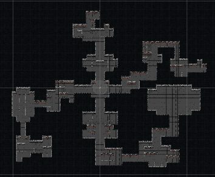
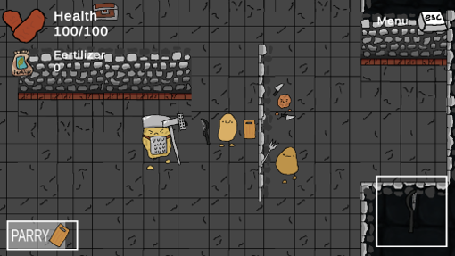
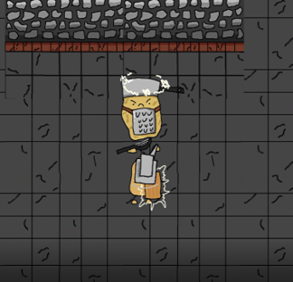
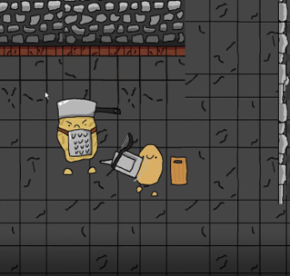

Description
Spud Knight is a 2D, rogue-like, dungeon crawler game where you play as a potato, fighting your way through a castle defeating other potatoes with kitchen utensils. As you make your way through the castle your objective is defeat all the enemies, including the final boss. The player traverses through the dungeon starting with a basic peeler as we their weapon and a cutting board for their shield. Use the shield to block, or parry attacks if timed correctly. The player is tasked with finding openings through shielding and movement to attack their enemy.
Running Game
Playtesting Reports
See link here for external - outside the classroom playtesting reports.
See link here for internal - inside the classroom playtesting reports.
Credits
Developers: Brandon DeGuia, Ali Ibrahim, Aman Swaroop, Safwaan Taher
Artist: Brandon DeGuia
Sound Designer: Aman Swaroop
Contact Us: bdeguia@uw.edu
References
See link here for references.
Trailer
Screenshots
Map
Enemy Combat
Parry
Attacking
Boss Battle

Source Code
See link here for source code.
Postmortem Presentation
See link here for postmortem presentation.
Game Presentation
See link here for game presentation.
Team Reflection
What is the one thing your team did really well? What evidence can you show for it?
Brandon DeGuia: I think we worked really well together in terms of development cohesion. We were able to collaborate on the same GitHub project simultaneously without causing merge conflicts or working on the same thing.
Ali Ibrahim: I feel we had good communication and overall talks about the design of the game, the combat mechanics are very specific and behave as we had expected it to from the start, this is because we specificed the design of the combat early on.
Aman Swaroop: I feel like we worked very well as a unit. Overall, we communicated very clearly on everything and had a clear expectation from everyone to contribute to the final project so that we can succeed as a group.
Safwaan Taher: Overall the game mechanics and art were well done and our team communication was likewise well done. The map, characters, animations and fighting mechanics are all evidence of this
If you had another 2-weeks to work on the game, what would be the 3 highest priority items
Brandon DeGuia: Minimap, Healh Regeneration, Dash Mechanics
Ali Ibrahim: Minimap, playtesting/debugging, health regeneration design
Aman Swaroop: Minimap, health regeneration, even more powerful weapons.
Safwaan Taher: Minimap, health regeneration, and a star tracking